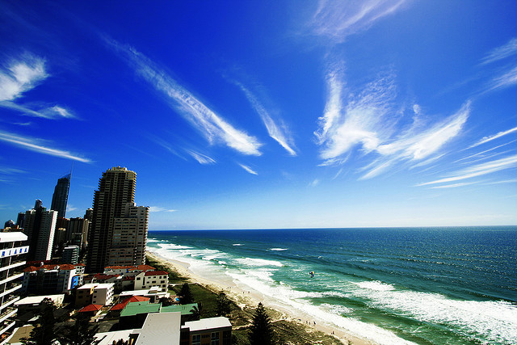

Wed, 25 Aug 2010 03:52:00 · Australia · SurferParadise · Beach
this pix reminds me of a conversation years ago

This pix reminds me of a conversation years ago when a friend of mine, who visited Australia for the first time, asked me, “So which one should I choose for my last few days in Oz, Canberra or Surfers Paradise?” To which I replied: “Why, Surfers Paradise, of course!” He asked, “Really, is it that good down there?" – "No, but Canberra is that bad!” -
Surfers Paradise, Queensland, Australia